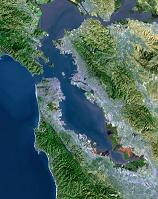

MEG のヒストリ
このサイトではおもに Mindfulness Encounter Group (Meg) の紹介をしています。韓国の同事摂ワークショップという言葉も登場してきます。どういう関係があるのでしょうか。狩俣修氏と私、岡健治が日本人を対象に Mindfulness Encounter Group というものをはじめるようになったヒストリーを述べてみます。
私はサンフランシスコのハコミ研究所で 2 年間のトレーニングを受けたのですが、ハコミ セラピーのメソッドを学ぶほかに毎回、チェックインから始まるグループ プロセスのようなものがありました。このグループ プロセスはそれなりにいいものだったのですが、私にはハコミのすばらしいメソッドが明確に取り入れられていないように思えて、いつも不満を感じていました。以来、ハコミの基本的メソッドを応用したグループ プロセスの開発が私の課題になりました。
そして出会ったのが、韓国の禅僧、龍陀師です。当時、龍陀師は Carmel にある三宝寺の住職をされていました。師が韓国では同事摂修練会というワークショップを 1980 年から継続して主宰されており、その中にはエンカウンターも取り入れているということを知りました。私は、驚くとともに非常に関心を持ち、師にお願いして三宝寺の韓国人信徒たちによるエンカウンターをファシリテートしていただくことにしました。このエンカウンターのメソッドがなんと私の渇望を非常に満足させてくれるものだったのです。
このエンカウンターは 2 年ほど続いたのですが、その後、師が帰国したりやらで立ち消えになってしまいました。大変寂しい思いをしていたところで、狩俣修氏と出会ったのです。狩俣氏は当時 ITP の博士課程に在学中で、グループ プロセスは三年間にわたるクラスを経験していました。聞くところによると、そのグループ プロセスはたいへん激しいもので、多くの人が心に傷つき脱落していったそうです。そのようなバイオレンスなグループ プロセスはもちろん私の望むものではありません。一方、狩俣氏は見るからに温厚で、すばらしい人格者でした。そこで、彼に共同のファシリテータをお願いして、こんどは日本人によるエンカウンターを始めたのです。Meg という愛称は彼が付けたものです。
それじゃあどうして「同事摂エンカウンター」と呼ばないのかって？それは、龍陀師が永きにわたって続けてこられた同事摂ワークショップのエンカウンターを 2 年やそこいらの経験で継承できるはずがありません。それで、別の名前を付けることにしたのです。Mindfulness Encounter Group は龍陀師の教えを基本に多くのメンバーが作り上げてきたものと言えます。